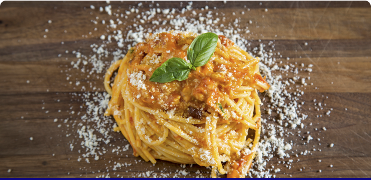

Weekday Sauce

Weekday Sauce is a simple tomato sauce that is quick, convenient and best of all delicious. After the sauce is made
you can use it in all kinds of ways. From chicken parmesan to a simple spaghetti, you will have a delicious and
versitile tomato sauce. Bone apple teeth!
Ingredients
- 28oz Can of Whole Peeled Plum San Marzano Tomatoes
- 4 Cloves of Garlic(thinly sliced)
- Handful of Basil (w/ stems)
- 1/4 cup Olive Oil
- 1/2 cup Parmesan Cheese
- Salt
Instructions
- In a large skillet, enough olive oil to coat the bottom of the pan on a low heat
- Add garlic and basil to the pan (we are adding this while the oil is still cold)
- Slowly steep these ingredients together. (we are looking for the oil to take in a lot of garlic and basil flavor.)
- Remove the basil once it has wilted and starts to brown. (3-4 mins, optionally you can leave it in as well)
- Add the tomatoes
- Bring the heat to medium-high and continue to stir. The idea is to make the oil and the tomatoes and homogenous, emulsified sauce. So it will look a little broken now, but over the cooking process, it should come together.
- Add a generous pinch of salt and continue to stir. We are cooking this hard and fast - so we will start to see a rapid bubble popping starting to occur on the surface of our sauce. That’s okay. That’s what we’re looking for. Just make sure you don’t burn the sauce once the water starts to cook out of the tomatoes.
- Once the sauce has come together add ⅓ cup of parmesan cheese (or more - there is no such thing as too much parmesan cheese) to your sauce. Stir to combine. Lower the heat on the stove and bring your sauce to a slow simmer.
- When you cook any pasta for this, cook it in salty boiling water, but cook it 2 minutes less than the package instructs. In the final two minutes, the pasta should finish cooking in the sauce to help thicken the sauce and help the pasta absorb the sauce. Then finish with some more cheese and basil.
- Your sauce is ready to eat.
Back to Home